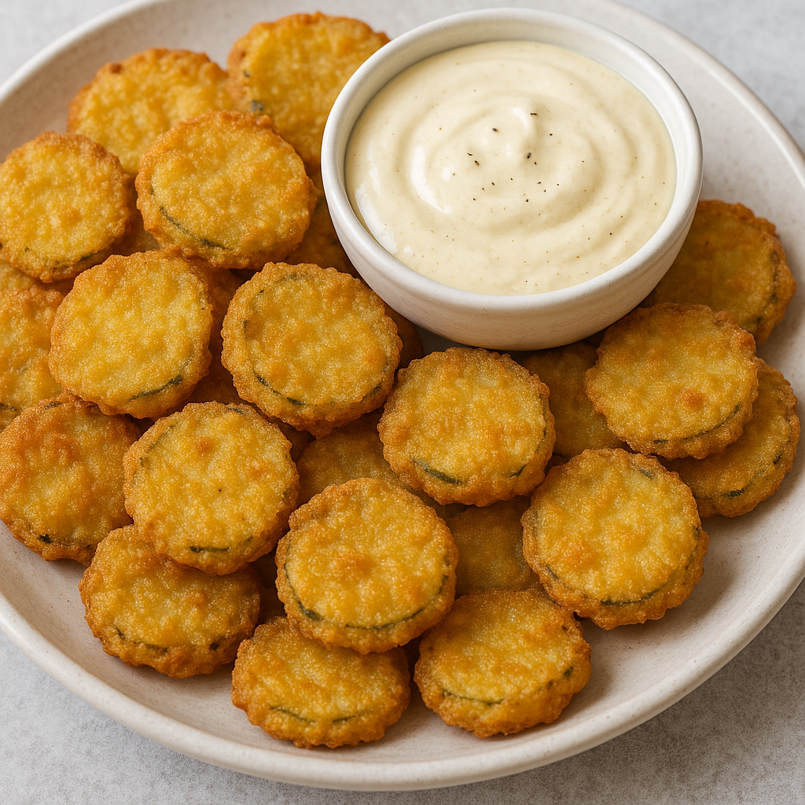

Fried Pickles

Crunchy, tangy dill pickle chips in a crisp seasoned coating.
Yield: ~4 servings |
Prep Time: 15 minutes |
Cook Time: 5 minutes
Fried Pickles Ingredients
- 3–4 large kosher dill pickles, sliced into ¼-inch rounds
- 1 cup buttermilk
- 1 large egg
- 1 cup all-purpose flour
- 1 teaspoon salt
- ½ teaspoon black pepper
- ½ teaspoon paprika
- ¼ teaspoon garlic powder
- ⅛ teaspoon cayenne pepper (optional)
- Neutral oil for frying (vegetable, canola, or peanut)
Directions
- Heat about 1 inch of oil in a heavy pot to 375°F (190°C).
- Pat pickle slices dry. Whisk buttermilk and egg in one bowl; mix flour, salt, pepper, paprika,
garlic powder, and cayenne in another.
- Dredge pickles in flour, dip in buttermilk mixture, then coat again in flour, shaking off excess.
- Fry in batches for 2–3 minutes, until golden and crisp. Drain on paper towels.
- Serve warm with ranch or your favorite dipping sauce.